№5 Завершающее задание 1, Механика
Разнообразие
Поскольку завершающие задания невероятно разнообразные по ситуациям и темам, которые в них задействованы - здесь разбираются только те задачи, благодаря которым у вас сформируется понимание про что вообще этот номер.
Этот номер устроен иначе, чем предыдущие. Тут не нужно ничего “вычислить один раз и написать число” — дают график, таблицу или картинку с описанием ситуации и 5 утверждений, из которых правильными могут быть либо 2 либо 3 варианта т.е. 0, 1, 4 или 5 утверждений правильные - такого быть не может. Нужно проверить КАЖДОЕ утверждение отдельно и в ответ выписать номера верных. Однако, это только для тренировки. С опытом вы научитесь не проверять некоторые утверждения, действовать методом исключения.
Форматно материал берётся сразу из всех разделов механики: кинематика, динамика, законы сохранения, статика, гидростатика, колебания — то есть в одной задаче может встретиться и график скорости, и импульс, и энергия одновременно. Поэтому и разбор каждого примера ниже — подробный: важно не просто получить цифру, а понимать, ПОЧЕМУ утверждение верно или неверно.
Разборы
Пример 1) (Решу ЕГЭ №26716 — Демонстрационная версия ЕГЭ-2022)
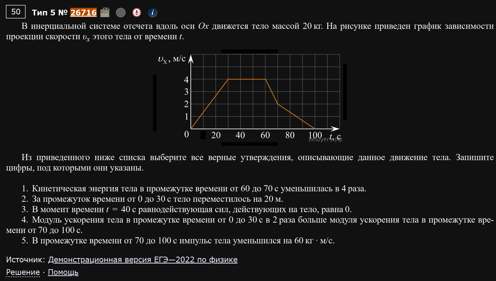
В инерциальной системе отсчёта вдоль оси Ox движется тело массой 20 кг. На рисунке приведён график зависимости проекции скорости υx этого тела от времени t. Из приведённого ниже списка выберите все верные утверждения:
- Кинетическая энергия тела в промежутке времени от 60 до 70 с уменьшилась в 4 раза.
- За промежуток времени от 0 до 30 с тело переместилось на 20 м.
- В момент времени t = 40 с равнодействующая сил, действующих на тело, равна 0.
- Модуль ускорения тела в промежутке времени от 0 до 30 с в 2 раза больше модуля ускорения тела в промежутке времени от 70 до 100 с.
- В промежутке времени от 70 до 100 с импульс тела уменьшился на 60 кг·м/с.
График — ломаная линия: скорость растёт от 0 до 4 м/с за первые 30 с, держится на 4 м/с с 30 до 60 с, затем падает до 2 м/с к 70 с, и дальше плавно падает до 0 к 100 с.
Разбираем по одному:
1. С 60 до 70 с скорость упала с 4 до 2 м/с — то есть ровно вдвое. А кинетическая энергия зависит от скорости квадратично (), значит она упала в раза. Верно.
2. Перемещение — это площадь под графиком скорости. С 0 до 30 с график — это прямая от 0 до 4 (треугольник): Не 20 м. Неверно.
3. t = 40 с попадает на участок 30-60 с, где скорость постоянна (горизонтальный отрезок графика). Раз скорость не меняется — ускорения нет, а значит по второму закону Ньютона равнодействующая сил равна нулю. Верно.
4. На участке 0-30 с скорость изменилась на 4 м/с за 30 с. На участке 70-100 с скорость изменилась на 2 м/с (с 2 до 0) за 30 с. Ускорение — это как раз , и в первом случае оно вдвое больше, потому что при том же времени (30 с) изменение скорости вдвое больше. Верно.
5. Импульс тела . Изменение импульса за 70-100 с: Не 60. Неверно.
Ответ: 134.
Как подступаться к таким задачам
Не пытайтесь угадать ответ “по ощущениям”. Разбирайте каждое утверждение как отдельную мини-задачу: если оно про энергию — вспоминаем формулу энергии, если про импульс — формулу импульса, если про ускорение — смотрим наклон графика. Экономии времени тут не будет, зато не будет и обидных ошибок.
Пример 2) (Решу ЕГЭ №25021 — ЕГЭ по физике 01.04.2021, досрочная волна)
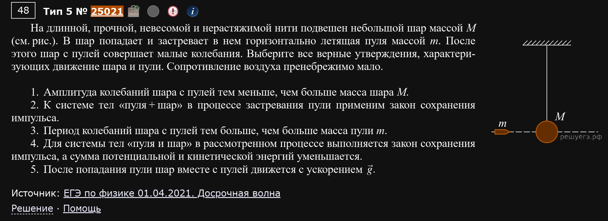
На длинной, прочной, невесомой и нерастяжимой нити подвешен небольшой шар массой M. В шар попадает и застревает в нём горизонтально летящая пуля массой m. После этого шар с пулей совершает малые колебания. Выберите все верные утверждения, характеризующие движение шара и пули. Сопротивление воздуха пренебрежимо мало.
- Амплитуда колебаний шара с пулей тем меньше, чем больше масса шара M.
- К системе тел «пуля + шар» в процессе застревания пули применим закон сохранения импульса.
- Период колебаний шара с пулей тем больше, чем больше масса пули m.
- Для системы тел «пуля и шар» в рассмотренном процессе выполняется закон сохранения импульса, а сумма потенциальной и кинетической энергий уменьшается.
- После попадания пули шар вместе с пулей движется с ускорением .
1. Сразу после удара, по закону сохранения импульса, скорость шара с пулей:
Чем больше масса шара M, тем меньше эта скорость. А раз вся кинетическая энергия сразу после удара переходит в потенциальную энергию в верхней точке качания (амплитуде), меньшая скорость означает меньшую амплитуду. Верно.
Есть в этом пункте также вариант вывести амплитуду из уравнения колебаний и явно показать зависимость от массы. Должно получиться что-то в роде:
2. Пуля и шар в момент застревания — замкнутая система (внешние силы вроде натяжения нити и тяжести в этот кратчайший момент не успевают изменить импульс заметно). Закон сохранения импульса применим. Верно.
3. Период малых колебаний математического маятника — зависит только от длины нити и g, но никак не от массы груза. Неверно.
Не перепутайте период с амплитудой.
4. Пуля застревает в шаре — это неупругий удар, а при любом неупругом ударе часть механической энергии переходит во внутреннюю (нагрев, деформация). Импульс при этом всё равно сохраняется (см. пункт 2), а вот сумма кинетической и потенциальной энергий (общая механическая) — уменьшается. Верно.
5. Это была бы правда, если бы шар просто падал свободно. Но здесь шар качается на нити — ускорение при таком движении всё время меняется и по модулю, и по направлению (в нижней точке оно центростремительное, направлено вдоль нити, а не вниз). Неверно.
Ответ: 124.
Собираем несколько тем в одной задаче
Такие задачи специально соединяют “удар” и “колебания” — тренируйте привычку не решать всё одной формулой, а сначала понять, какой физический процесс идёт на каждом этапе (сначала удар, потом — колебания), и для каждого применять свою формулу.
Пример 3) (Решу ЕГЭ №32580 — Пробный ЕГЭ по физике, Москва, 18.04.2023)
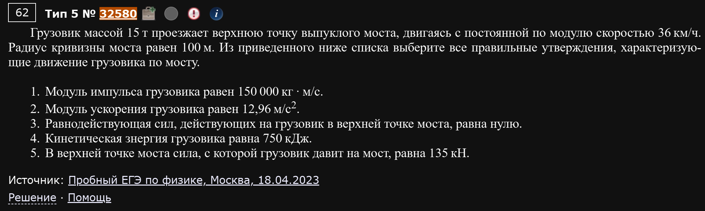
Грузовик массой 15 т проезжает верхнюю точку выпуклого моста, двигаясь с постоянной по модулю скоростью 36 км/ч. Радиус кривизны моста равен 100 м. Выберите все правильные утверждения:
- Модуль импульса грузовика равен 150 000 кг·м/с.
- Модуль ускорения грузовика равен 12,96 м/с².
- Равнодействующая сил, действующих на грузовик в верхней точке моста, равна нулю.
- Кинетическая энергия грузовика равна 750 кДж.
- В верхней точке моста сила, с которой грузовик давит на мост, равна 135 кН.
Сначала переведём данные в СИ: m = 15 т = 15000 кг, v = 36 км/ч = 10 м/с, R = 100 м.
1. кг·м/с. Верно.
2. На вершине выпуклого моста тело движется по дуге окружности, значит у него есть центростремительное ускорение: Не 12,96. Неверно.
3. Раз есть ускорение (см. пункт 2) — по второму закону Ньютона равнодействующая сил точно не ноль. Неверно.
4. Дж = 750 кДж. Верно.
5. Вот здесь самое интересное — это классическая задача про “невесомость на горке”. На вершине моста на грузовик действуют сила тяжести (вниз) и сила реакции опоры N (вверх), а результирующая этих двух сил как раз и обеспечивает центростремительное ускорение (направленное вниз, к центру окружности):
По третьему закону Ньютона сила, с которой грузовик давит на мост, равна по модулю силе реакции опоры N. Верно.
Ответ: 145.
Почему сила давления на мост меньше веса
На вершине выпуклого моста опора “поддерживает” тело слабее, чем на ровной дороге — часть силы тяжести идёт на то, чтобы “поворачивать” грузовик по дуге. Это тот же эффект, что вы чувствуете, проезжая на машине через горб на дороге — тело как будто “легчает”.
Пример 4) (Решу ЕГЭ №25359 — ЕГЭ по физике 11.06.2021, Москва)
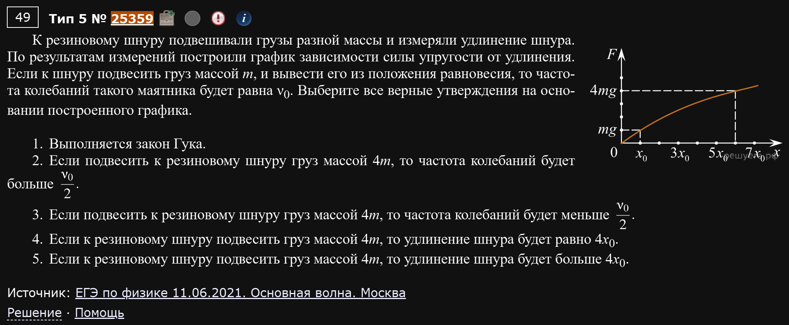
К резиновому шнуру подвешивали грузы разной массы и измеряли удлинение шнура. По результатам измерений построили график зависимости силы упругости от удлинения. Если к шнуру подвесить груз массой m, и вывести его из положения равновесия, то частота колебаний такого маятника будет равна ν₀. Выберите все верные утверждения на основании построенного графика:
- Выполняется закон Гука.
- Если подвесить груз массой 4m, то частота колебаний будет больше ν₀.
- Если подвесить груз массой 4m, то частота колебаний будет меньше ν₀.
- Если подвесить груз массой 4m, то удлинение шнура будет равно 4x₀.
- Если подвесить груз массой 4m, то удлинение шнура будет больше 4x₀.
Ключевая деталь: график силы упругости от удлинения — это не прямая линия, а кривая (резина, в отличие от металлической пружины, подчиняется закону Гука только очень приблизительно и на небольшом участке). Из графика видно: грузу массой m соответствует удлинение x₀, а вот грузу массой 4m (то есть силе 4mg) соответствует удлинение не 4x₀, а целых 6x₀.
1. Раз график — не прямая пропорциональность, закону Гука (, прямая линия через ноль) шнур не подчиняется. Неверно.
2, 3. Частота маятника на пружине . Эту формулу возьмем за ориентир, с ней и будем сравнивать. По графику видно, что (самая первая точка ). Таким образом:
Поскольку мы вешаем груз массой , то по графику можно определить, что такая сила тяжести соответствует удлинению . А это означает:
Что дает приблизительно . Т.е. третий пункт верный, а второй - нет.
4, 5. Раз при массе 4m реальное удлинение по графику — это 6x₀, а . Утверждение 4 неверно, утверждение 5 верно.
Ответ: 35.
Резина — это не пружина!
Главная ловушка этой задачи: машинально считать, что раз масса выросла в 4 раза, то и удлинение (и всё остальное) тоже пропорционально изменится в 4 раза. Как только видите нелинейный график F(x) — забудьте про формулы простого пружинного маятника в лоб и работайте только с тем, что реально показывает график.
Пример 5) (Решу ЕГЭ №24355 — ЕГЭ по физике 13.07.2020, основная волна)
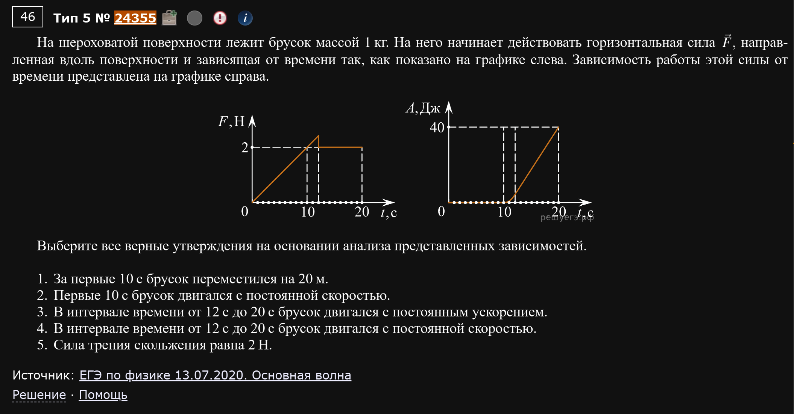
На шероховатой поверхности лежит брусок массой 1 кг. На него начинает действовать горизонтальная сила, зависящая от времени так, как показано на графике слева. Зависимость работы этой силы от времени представлена на графике справа. Выберите все верные утверждения:
- За первые 10 с брусок переместился на 20 м.
- Первые 10 с брусок двигался с постоянной скоростью.
- В интервале времени от 12 с до 20 с брусок двигался с постоянным ускорением.
- В интервале времени от 12 с до 20 с брусок двигался с постоянной скоростью.
- Сила трения скольжения равна 2 Н.
Здесь два графика сразу, и главный трюк — читать их вместе. На графике силы: сила растёт от 0 до 10 с, затем постоянна. На графике работы: работа равна нулю первые 10 с, а затем растёт линейно (прямая пропорциональность работы времени).
1, 2. Работа силы за первые 10 с равна нулю. Но работа — это , и раз сила не была равна нулю (она росла от 0), а работа всё равно нулевая, значит перемещение было нулевым. Тело просто стояло на месте (сила была недостаточной, чтобы преодолеть трение покоя). Оба утверждения неверны (тело не перемещалось и не двигалось вовсе).
3, 4. С 12 до 20 с график работы — прямая (работа растёт равномерно, ). Если работа постоянной силы растёт прямо пропорционально времени, а сама сила на этом участке не меняется (это видно по левому графику), то и перемещение растёт пропорционально времени — то есть скорость постоянна. Постоянная скорость означает нулевое ускорение. Утверждение 3 неверно (ускорение не постоянно, а равно нулю), утверждение 4 верно.
5. Раз с 12 до 20 с скорость постоянна — тело движется равномерно, значит все силы уравновешены, и приложенная сила в точности равна силе трения скольжения. По графику слева на этом участке сила равна 2 Н. Верно.
Также этот пункт можно взять по остаточному принципу.
Ответ: 45.
Работа равна нулю — не значит "сила равна нулю"
Самая частая ошибка здесь — решить, что раз работа на графике нулевая, то и сила нулевая. Это не так: работа зависит и от силы, и от перемещения (), и нулевой она может быть просто потому, что тело никуда не сдвинулось, хотя сила на него действовала.
Пример 6) (Решу ЕГЭ №16846 — ЕГЭ по физике 2020, досрочная волна, вариант 1)
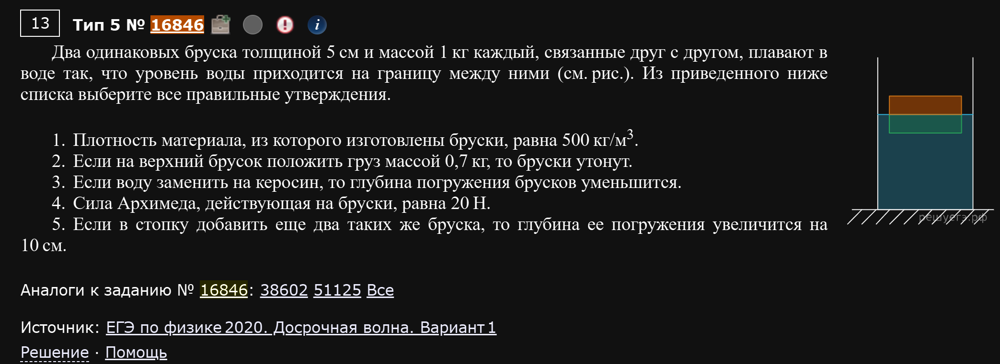
Два одинаковых бруска толщиной 5 см и массой 1 кг каждый, связанные друг с другом, плавают в воде так, что уровень воды приходится на границу между ними. Выберите все правильные утверждения:
- Плотность материала, из которого изготовлены бруски, равна 500 кг/м³.
- Если на верхний брусок положить груз массой 0,7 кг, то бруски утонут.
- Если воду заменить на керосин, то глубина погружения брусков уменьшится.
- Сила Архимеда, действующая на бруски, равна 20 Н.
- Если в стопку добавить ещё два таких же бруска, то глубина её погружения увеличится на 10 см.
Условие говорит, что уровень воды проходит ровно по границе между брусками — значит под водой находится ровно ОДИН брусок (полностью погружён), а второй — целиком над водой.
4. Раз система плавает и никуда не движется — сила Архимеда полностью уравновешивает силу тяжести ОБОИХ брусков:
Верно.
1. Сила Архимеда равна весу вытесненной воды, а вытеснен объём ровно одного бруска V:
Плотность материала брусков:
Стоп — тут нужно аккуратнее: масса ОДНОГО бруска m = 1 кг, а его объём — это как раз тот V, что мы нашли (0,002 м³), потому что под водой всего один брусок:
Верно.
2. Максимальная сила Архимеда (когда оба бруска полностью под водой) была бы вдвое больше, то есть 40 Н, а это соответствует весу 4 кг. Суммарный вес брусков с грузом: 2 кг (бруски) + 0,7 кг (груз) = 2,7 кг — это меньше 4 кг, значит система не утонет, потонуть не хватит веса. Неверно.
3. Плотность керосина меньше плотности воды. Чтобы создать ту же силу Архимеда (уравновесить тот же вес), при менее плотной жидкости нужен БОЛЬШИЙ погружённый объём — то есть глубина погружения увеличится, а не уменьшится. Неверно.
5. Если добавить ещё два таких же бруска (итого 4 бруска), то по той же логике под водой окажется ровно половина стопки — то есть 2 бруска, то есть глубина погружения будет 2×5 см = 10 см. Было 5 см (один брусок), стало 10 см — увеличение на 5 см, а не на 10 см. Неверно.
Ответ: 14.
Ключевая мысль про плавающие тела
Для плавающего (не тонущего и не всплывающего до конца) тела сила Архимеда ВСЕГДА равна весу этого тела — вне зависимости от того, сколько тело весит и какой формы. Это правило решает большинство пунктов в подобных задачах.
Пример 7) (Решу ЕГЭ №38537 — ЕГЭ по физике 04.06.2024, основная волна)
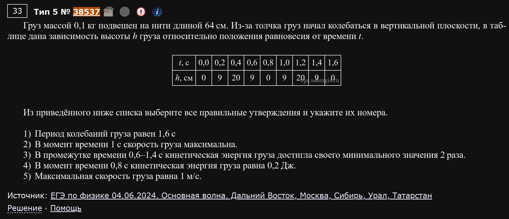
Груз массой 0,1 кг подвешен на нити длиной 64 см. Из-за толчка груз начал колебаться в вертикальной плоскости, в таблице дана зависимость высоты h груза относительно положения равновесия от времени t.
| t, с | 0,0 | 0,2 | 0,4 | 0,6 | 0,8 | 1,0 | 1,2 | 1,4 | 1,6 |
|---|---|---|---|---|---|---|---|---|---|
| h, см | 0 | 9 | 20 | 9 | 0 | 9 | 20 | 9 | 0 |
- Период колебаний груза равен 1,6 с.
- В момент времени 1 с скорость груза максимальна.
- В промежутке времени 0,6–1,4 с кинетическая энергия груза достигла своего минимального значения 2 раза.
- В момент времени 0,8 с кинетическая энергия груза равна 0,2 Дж.
- Максимальная скорость груза равна 1 м/с.
Смотрим на таблицу как на график: высота идёт 0→9→20→9→0→9→20→9→0. То есть маятник качается от положения равновесия (h=0) до крайней точки (h=20 см) и обратно, и полный цикл (0→20→0) укладывается ровно в 1,6 с.
1. Полный цикл колебания — это ровно один период. По таблице от t=0 (h=0, движение в одну сторону) до t=1,6 (h=0, снова направление то же самое, так как перед этим прошли через максимум) — это и есть один период. Верно.
2. t=1 c по таблице — это h=20 см, крайняя точка (максимальное отклонение). В крайней точке маятник на мгновение останавливается, скорость равна НУЛЮ, а не максимальна. Неверно.
3. Кинетическая энергия минимальна (равна нулю) там, где скорость равна нулю — то есть в крайних точках, где h максимально (h=20). В промежутке 0,6-1,4 с это происходит один раз, при t=1,0 с. Неверно (не 2 раза, а 1).
4. При t=0,8 с высота h=0 — груз проходит положение равновесия, где скорость (и кинетическая энергия) максимальна. Максимальная потенциальная энергия (в крайней точке, на высоте h=20 см=0,2 м) переходит целиком в кинетическую энергию в положении равновесия (закон сохранения энергии для колебаний без трения):
Верно.
5. Из той же максимальной кинетической энергии находим максимальную скорость:
Не 1 м/с. Неверно.
Ответ: 14.
Таблица — это тот же график, просто в цифрах
Не пугайтесь, если вместо рисунка дали таблицу значений. Мысленно (или на черновике) стройте по ней график — сразу станет видно, где у маятника крайние точки (там скорость и кинетическая энергия равны нулю), а где положение равновесия (там они максимальны).
Пример 8) (Решу ЕГЭ №38187 — ЕГЭ по физике 02.04.2024, досрочная волна)
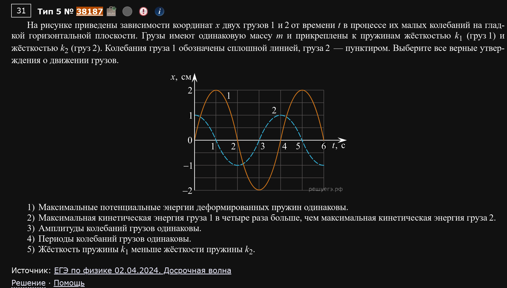
На рисунке приведены зависимости координат x двух грузов 1 и 2 от времени t в процессе их малых колебаний на гладкой горизонтальной плоскости. Грузы имеют одинаковую массу m и прикреплены к пружинам жёсткостью k₁ (груз 1) и жёсткостью k₂ (груз 2). Колебания груза 1 обозначены сплошной линией, груза 2 — пунктиром. Выберите все верные утверждения:
- Максимальные потенциальные энергии деформированных пружин одинаковы.
- Максимальная кинетическая энергия груза 1 в четыре раза больше, чем максимальная кинетическая энергия груза 2.
- Амплитуды колебаний грузов одинаковы.
- Периоды колебаний грузов одинаковы.
- Жёсткость пружины k₁ меньше жёсткости пружины k₂.
С графика считываем: амплитуда груза 1 (сплошная линия) — 2 см, амплитуда груза 2 (пунктир) — 1 см, а вот периоды у обоих одинаковые — 4 с.
Первым делом используем период, чтобы сравнить жёсткости. Раз массы одинаковые (), а период пружинного маятника зависит только от массы и жёсткости — из равенства периодов сразу следует, что и жёсткости пружин равны: .
3. Амплитуды — 2 см и 1 см, то есть разные. Неверно.
4. Периоды по графику одинаковы (оба 4 с). Верно.
5. Мы уже выяснили, что (равенство, а не “меньше”). Неверно.
1. Максимальная потенциальная энергия пружины — это энергия в крайней точке, где всё смещение равно амплитуде:
Жёсткости одинаковы, а амплитуды разные (у груза 1 она больше). Значит и максимальная потенциальная энергия у груза 1 больше, чем у груза 2 — они не одинаковы. Неверно.
2. По закону сохранения энергии максимальная кинетическая энергия груза равна максимальной потенциальной энергии его пружины (вся энергия в равновесии переходит в кинетическую). Тогда отношение:
(жёсткости сократились, так как они равны). Верно.
Ответ: 24.
Период — это первый ключ к разгадке
В задачах про два колеблющихся тела с графиком x(t) начинайте именно с периода: он сразу даёт связь между массой и жёсткостью, а дальше через амплитуду и формулу энергии пружины легко находится всё остальное.
Пример 9) (Демидова 2026, вариант 3)
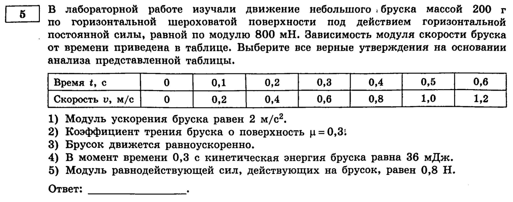
В лабораторной работе изучали движение небольшого бруска массой 200 г по горизонтальной шероховатой поверхности под действием горизонтальной постоянной силы, равной по модулю 800 мН. Зависимость модуля скорости бруска от времени приведена в таблице.
| t, с | 0 | 0,1 | 0,2 | 0,3 | 0,4 | 0,5 | 0,6 |
|---|---|---|---|---|---|---|---|
| v, м/с | 0 | 0,2 | 0,4 | 0,6 | 0,8 | 1,0 | 1,2 |
- Модуль ускорения бруска равен 2 м/с².
- Коэффициент трения бруска о поверхность μ = 0,3.
- Брусок движется равноускоренно.
- В момент времени 0,3 с кинетическая энергия бруска равна 36 мДж.
- Модуль равнодействующей сил, действующих на брусок, равен 0,8 Н.
Новый формат по сравнению со всем, что было выше: здесь и таблица, и трение, и второй закон Ньютона нужно объединить в один анализ.
1, 3. По таблице скорость растёт равномерно: каждые 0,1 с прибавляется ровно 0,2 м/с. Значит:
и это ускорение одинаково на любом отрезке таблицы — то есть движение действительно равноускоренное. Оба утверждения верны.
5. Равнодействующая сил — это то, что реально разгоняет брусок: Н. Это НЕ 0,8 Н — 0,8 Н это только приложенная сила, а не равнодействующая (часть её “съедает” трение). Неверно.
2, 4. Раз равнодействующая — это разница между приложенной силой и силой трения (ну, вообще сумма, но трение отрицательно т.к. направлено против движения):
Не 0,3. Утверждение 2 неверно. При t=0,3 с скорость v=0,6 м/с:
Утверждение 4 верно.
Ответ: 134.
Приложенная сила ≠ равнодействующая
Самая частая ошибка этого прототипа — взять данную в условии силу (0,8 Н) и сразу считать её равнодействующей. На самом деле равнодействующая — это то, что реально стоит в , а приложенная сила — лишь одно из слагаемых, потому что есть ещё и трение, которое тянет в обратную сторону.
Пример 10) (Демидова 2026, вариант 10)
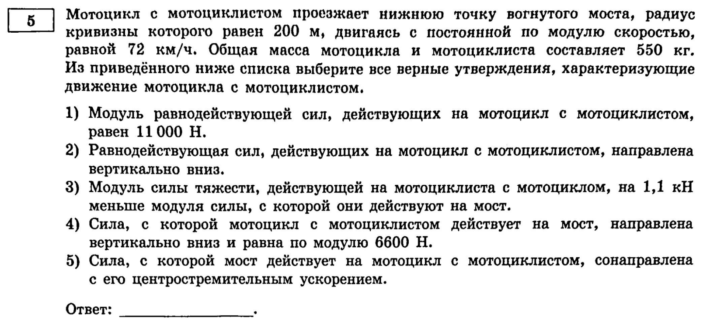
Мотоцикл с мотоциклистом проезжает нижнюю точку вогнутого моста, радиус кривизны которого равен 200 м, двигаясь с постоянной по модулю скоростью, равной 72 км/ч. Общая масса мотоцикла и мотоциклиста составляет 550 кг. Из приведённого ниже списка выберите все верные утверждения:
- Модуль равнодействующей сил, действующих на мотоцикл с мотоциклистом, равен 11000 Н.
- Равнодействующая сил, действующих на мотоцикл с мотоциклистом, направлена вертикально вниз.
- Модуль силы тяжести, действующей на мотоциклиста с мотоциклом, на 1,1 кН меньше модуля силы, с которой они действуют на мост.
- Сила, с которой мотоцикл с мотоциклистом действует на мост, направлена вертикально вниз и равна по модулю 6600 Н.
- Сила, с которой мост действует на мотоцикл с мотоциклистом, сонаправлена с его центростремительным ускорением.
Это зеркальная версия примера 3 (выпуклый мост) — только теперь мост вогнутый (яма, а не горб), и здесь эффект обратный: на дне вогнутого моста опора давит на тело СИЛЬНЕЕ, чем просто вес, а не слабее.
Переводим в СИ: m=550 кг, v=72 км/ч=20 м/с, R=200 м.
1. 11000 Н — это в 10 раз больше, чем реально получается (1100 Н). Неверно.
2. В нижней точке вогнутого моста центр окружности (кривизны) находится НАД дорогой, значит центростремительное ускорение (а вместе с ним и равнодействующая) направлено вверх, а не вниз. Неверно.
3, 4. На дне ямы опора N должна не только уравновесить вес, но и создать направленную вверх равнодействующую (центростремительную силу):
По третьему закону Ньютона именно с такой силой (6600 Н, вниз) мотоцикл давит на мост — утверждение 4 верно. А разница между весом (5500 Н) и этой силой (6600 Н) как раз и есть 1100 Н = 1,1 кН, то есть сила тяжести действительно на 1,1 кН МЕНЬШЕ силы давления на мост — утверждение 3 верно.
5. Сила реакции опоры N направлена от моста вверх, и центростремительное ускорение здесь тоже направлено вверх (см. пункт 2) — значит они сонаправлены. Верно.
Ответ: 345.
Горб vs яма
На горбу (выпуклый мост) опора “недодавливает” — вы как будто легче. В яме (вогнутый мост) опора “передавливает” — вы как будто тяжелее. Физика одна и та же (второй закон Ньютона + центростремительное ускорение), просто направление ускорения меняется на противоположное.
Пример 11) (Демидова 2026, вариант 13)
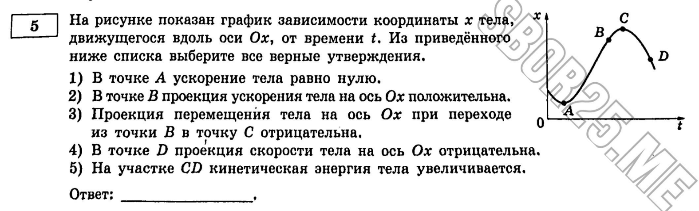
На рисунке показан график зависимости координаты х тела, движущегося вдоль оси Ох, от времени t. Из приведённого ниже списка выберите все верные утверждения:
- В точке А ускорение тела равно нулю.
- В точке В проекция ускорения тела на ось Ох положительна.
- Проекция перемещения тела на ось Ох при переходе из точки В в точку С отрицательна.
- В точке D проекция скорости тела на ось Ох отрицательна.
- На участке CD кинетическая энергия тела увеличивается.
Здесь график — не ломаная из прямых отрезков, а гладкая кривая (по форме похожая на траекторию тела, брошенного вверх): координата растёт от точки А, проходит через В, достигает максимума в точке С (это самая верхняя точка кривой), а затем убывает через D.
Ключевая мысль
Раз кривая всё время “выгнута вниз” (как парабола с ветвями вниз) — это значит, что ускорение здесь постоянно и отрицательно на всём участке ОТ А ДО D, включая саму точку А (ускорение никогда не равно нулю — обнуляется только скорость, причём именно в вершине С).
Такой вывод мы можем сделать еще и из-за свойства производных. Вторая производная по координате - это ускорение. И также вторая производная в математике определяет “изгиб” графика. Если “изгиб” вверх - вторая производная положительна, если вниз - отрицательна.
Этот факт не раз спасет вам задачу на экзамене, его надо отдельно записать.
1. Ускорение не равно нулю нигде на этой кривой (постоянно и одинаково по знаку). Неверно.
2. Ускорение везде отрицательно (кривая выгнута вниз), в том числе в точке В — значит проекция ускорения НЕ положительна. Неверно.
3. Точка С — это вершина (максимум координаты), то есть она выше, чем В. Двигаясь из В в С, координата растёт, значит перемещение — положительное, а не отрицательное. Неверно.
4. Точка D находится уже ПОСЛЕ вершины С, на убывающем участке — там координата уменьшается, значит скорость (проекция) отрицательна. Верно.
5. В самой вершине С скорость равна нулю (это единственная точка, где кинетическая энергия минимальна — ноль). Двигаясь дальше к D, тело набирает скорость (уже в отрицательном направлении), то есть модуль скорости растёт от нуля — а значит кинетическая энергия увеличивается. Верно.
Ответ: 45.
Гладкая кривая — это не ломаная
Если график x(t) — плавная кривая, а не набор прямых отрезков, забудьте про “постоянную скорость на участке” — тут скорость меняется непрерывно, и на первый план выходит форма кривой: выпуклая вниз — ускорение всё время отрицательно, выпуклая вверх — всё время положительно, а вершины и впадины — это моменты, где скорость равна нулю.
Пример 12) (Демидова 2026, вариант 17)
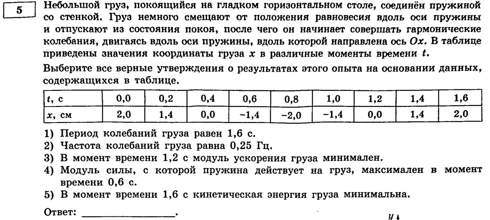
Небольшой груз, покоящийся на гладком горизонтальном столе, соединён пружиной со стенкой. Груз немного смещают от положения равновесия вдоль оси пружины и отпускают из состояния покоя, после чего он начинает совершать гармонические колебания, двигаясь вдоль оси пружины, вдоль которой направлена ось Ох. В таблице приведены значения координаты груза х в различные моменты времени t.
| t, с | 0,0 | 0,2 | 0,4 | 0,6 | 0,8 | 1,0 | 1,2 | 1,4 | 1,6 |
|---|---|---|---|---|---|---|---|---|---|
| x, см | 2,0 | 1,4 | 0,0 | -1,4 | -2,0 | -1,4 | 0,0 | 1,4 | 2,0 |
- Период колебаний груза равен 1,6 с.
- Частота колебаний груза равна 0,25 Гц.
- В момент времени 1,2 с модуль ускорения груза минимален.
- Модуль силы, с которой пружина действует на груз, максимален в момент времени 0,6 с.
- В момент времени 1,6 с кинетическая энергия груза минимальна.
Похоже на пример 7 (там был маятник по таблице высот), но здесь — горизонтальная пружина, и координата х умеет быть отрицательной. Это меняет то, где искать “крайние” и “равновесные” точки.
1. Полный цикл: от максимума (x=2,0 при t=0) через ноль, до минимума (x=-2,0 при t=0,8), обратно через ноль — и снова к максимуму (x=2,0 при t=1,6). Это ровно один период. Верно.
2. Гц, а не 0,25. Неверно.
3. При t=1,2 с координата x=0 — это положение равновесия. Сила пружины (и, соответственно, ускорение) пропорциональна смещению : . В положении равновесия x=0, значит и сила, и ускорение здесь равны нулю — то есть минимальны по модулю. Верно.
4. При t=0,6 с координата x=-1,4 см — это НЕ крайняя точка (крайние точки — x=±2,0 см, они достигаются при t=0; 0,8; 1,6 с). Сила пружины максимальна там, где максимально |x|, то есть при t=0,8 с, а не при 0,6 с. Неверно.
5. При t=1,6 с координата x=2,0 см — это крайняя точка (максимальное отклонение), где груз на мгновение останавливается. Скорость равна нулю, а значит и кинетическая энергия минимальна (равна нулю). Верно.
Ответ: 135.
Не путайте "далеко от начала таблицы" с "крайней точкой"
В примере 7 таблица высот всегда была неотрицательной, и крайняя точка была там, где число максимально. Здесь же координата колеблется между +2 и -2 — крайние точки это x=+2 ИЛИ x=-2, а не только положительный максимум. Всегда сверяйтесь с модулем |x|, а не с самим знаком числа.
Пример 13) (Демидова 2026, вариант 25)
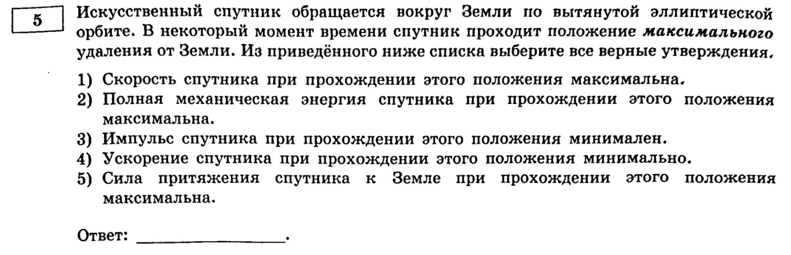
Искусственный спутник обращается вокруг Земли по вытянутой эллиптической орбите. В некоторый момент времени спутник проходит положение максимального удаления от Земли. Из приведённого ниже списка выберите все верные утверждения:
- Скорость спутника при прохождении этого положения максимальна.
- Полная механическая энергия спутника при прохождении этого положения максимальна.
- Импульс спутника при прохождении этого положения минимален.
- Ускорение спутника при прохождении этого положения минимально.
- Сила притяжения спутника к Земле при прохождении этого положения максимальна.
Совершенно новая тема — движение спутника по эллиптической (не круговой!) орбите. Картинки и чисел тут нет вообще, всё решается пониманием физики движения по эллипсу. Точка максимального удаления называется апогеем.
1, 3. Объяснение для ботанов: Чем дальше спутник от Земли, тем МЕДЛЕННЕЕ он движется (это следствие того, что момент импульса спутника относительно Земли сохраняется на протяжении всей орбиты: там, где расстояние больше, скорость должна быть меньше, чтобы момент импульса оставался тем же). В апогее спутник находится дальше всего — значит, скорость здесь МИНИМАЛЬНА, а не максимальна. Утверждение 1 неверно. А раз скорость минимальна, то и импульс тоже минимален. Утверждение 3 верно.
Объяснение для людей: сила, которая действует на спутник уменьшается с отдалением от Земли. Значит, уменьшается и центростремительное ускорение, значит уменьшается и скорость.
2. Полная механическая энергия спутника (кинетическая + потенциальная) сохраняется на протяжении всей орбиты — сила тяготения консервативна, других сил нет. Значит, эта энергия одинакова во всех точках орбиты, в том числе и здесь — то есть она и есть тот самый максимум (он же минимум, он же единственное значение). Верно.
4, 5. И ускорение (), и сила притяжения () убывают с расстоянием . В апогее расстояние максимально — значит, и сила, и ускорение здесь МИНИМАЛЬНЫ. Утверждение 4 верно, утверждение 5 неверно.
Ответ: 234.
Что сохраняется, а что нет
На эллиптической орбите скорость, импульс, сила и ускорение — все они меняются от точки к точке (зависят от расстояния до Земли). А вот полная механическая энергия и момент импульса — сохраняются всегда. Именно на этом держится вся логика подобных задач: если спрашивают про энергию — она константа; если про скорость, силу или ускорение — сравнивайте расстояния до Земли.